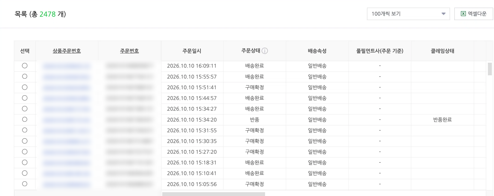
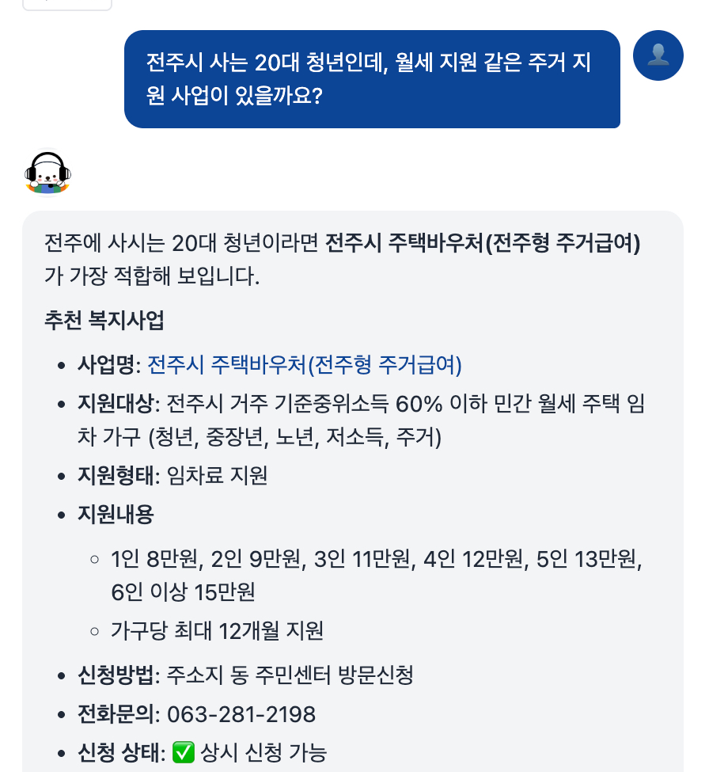
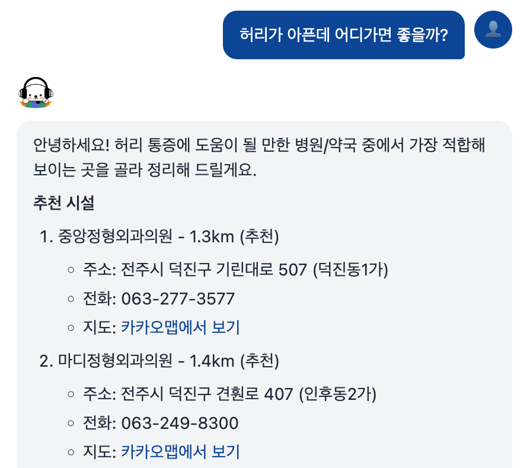
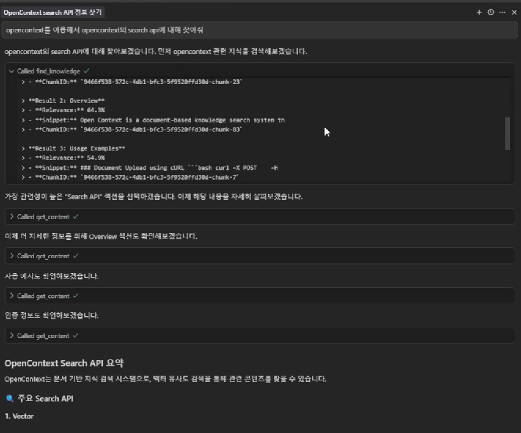
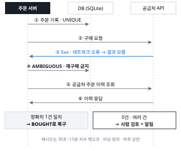
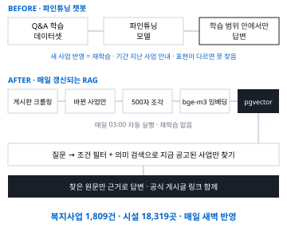
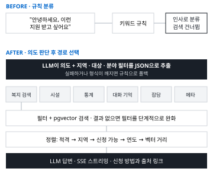
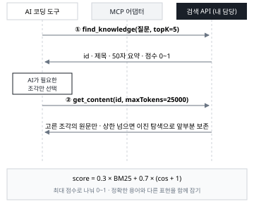

결제 확인부터 공급처 발주, 고객 발송, 매시간 대사까지 정해진 코드로 이어지는 주문 파이프라인을 만들고 혼자 운영했습니다. 하루 1,000건이 넘는 주문을 한 사람이 감당하도록, 판단이 필요한 일만 사람에게 올라오고 나머지는 근거에 따라 자동으로 돌게 설계했습니다.
돈이 나가는 처리는 규칙으로 고정했습니다. 응답이 끊겨 결과를 모르는 주문은 재구매하지 않고 보류한 뒤 공급처 이력과 정확히 1건이 맞을 때만 확정했고, 같은 주문의 중복 처리는 DB 제약과 조건부 갱신으로 막았습니다. AI 점검 에이전트는 상태를 읽고 보고하며 허용 목록의 조치만 실행합니다.

기존 챗봇은 파인튜닝 기반이라 새 사업을 넣으려면 다시 학습해야 했고 신청 기간이 지난 사업을 안내하기도 했습니다. 공개 게시판에서 바뀐 사업만 매일 새벽 수집해 임베딩하는 RAG 구조로 바꿔 복지사업 1,809건과 시설 18,319곳이 재학습 없이 반영되게 했습니다.
LLM이 질문 의도와 지역, 대상 조건을 함께 뽑게 하고 실패하면 규칙으로 처리하게 했습니다. 기관 포털을 고칠 수 없어 스크립트 한 줄로 붙는 위젯으로 연결했고, 개발자가 없는 기관이 직접 운영하도록 관리자 화면과 운영 문서를 함께 넘겼습니다. 3인 팀 팀장으로 요구사항 협의, 설계, 서버, 검색, 인증을 맡았고 팀원 2명이 복지 자료 조사와 발표, 문서를 맡았습니다.


현장실습에서 AI 코딩 도구에 외부 문서 검색 서비스를 붙여 보니 효과는 컸지만 회사 문서는 밖으로 보낼 수 없어 정작 사내 자료에는 쓸 수 없었습니다. 이것을 기능 부족이 아니라 데이터 통제권 문제로 보고, 회사가 자기 서버에 설치해 쓰는 MCP 검색 서버를 팀에 제안해 기획과 설계를 맡았습니다.
검색 엔진(BM25 + 로컬 임베딩 벡터 점수 결합), 2단계 조회 API, DB 설계, 관리자 화면, 배포를 맡았고 문서 처리 파이프라인과 MCP 어댑터는 팀원이 맡았습니다. 검색과 임베딩 모두 외부 API 호출 없이 조직 안에서 돕니다. 취약점이 보고된 의존성 두 건은 패치 버전으로 교체했습니다.


공급처가 5xx나 네트워크 오류를 주면 구매가 됐는지 알 수 없었습니다. 재시도하면 이미 결제된 구매를 한 번 더 할 수 있었습니다.
재시도 → 이중 구매 위험
실패 처리 → 이미 산 상품을 버리고 손님은 못 받음
채택 결과를 모르는 상태로 보류한 뒤 공급처 이력과 대조
결과를 모르는 주문은 다시 사지 않고 보류한 뒤 공급처 주문 이력에서 정확히 1건이 맞을 때만 복구했습니다. 중복 처리는 주문번호 UNIQUE와 조건부 UPDATE로 DB가 막게 했습니다. 0건이거나 여러 건이면 사람 검토로 넘겼습니다.
대신 결과를 모르는 주문은 처리가 몇 분 늦어집니다. 늦는 것보다 두 번 사는 쪽이 훨씬 비싸다고 판단했습니다.
불명확한 주문을 재실행하지 않고 대조 후 확정하는 순서로 하루 최대 1,378건의 실거래를 처리했습니다. 발송 직전에도 같은 상품 코드가 다른 주문에 나간 적이 있는지 한 번 더 확인하고, 겹치면 보내지 않고 멈추게 했습니다. 이 상황들은 재현 테스트로 고정했습니다.
혼자 24시간 지켜볼 수 없어 AI 점검 에이전트를 붙였습니다. 하지만 돈이 걸린 일이라 에이전트가 잘못 판단하면 되돌릴 수 없는 손해가 납니다.
에이전트가 처리까지 → 같은 상황에서도 매번 다르게 판단할 수 있음
사람이 모든 주문 확인 → 하루 1,000건 넘게 오면 감당 불가
채택 처리는 코드, 감시는 에이전트, 돈과 한도는 사람
에이전트가 할 수 있는 조치를 허용 목록으로 정해 재구매, 코드 할당, 고객 발송을 막고, 규칙으로 되는 일에는 AI를 부르지 않았습니다. 처리 상한은 정상 판매가 확인될 때만 늘어나고, 전역 정지 스위치와 비축 수량 상한을 두었습니다.
에이전트는 상태를 읽고 보고하며 가격, 광고는 미리 정한 범위 안에서만 조정하고, 되돌릴 수 없는 조치는 정해진 코드 규칙과 제 결정으로만 실행됩니다.
외부 API는 성공과 실패 말고 아직 모름을 돌려줄 때가 있습니다. 이것을 실패로 읽으면 같은 것을 다시 보내고, 확실한 실패를 모름으로 읽으면 처리해야 할 주문이 멈춥니다. 둘 다 실제 판매 중에 일어났습니다.
외부 결과를 성공, 확실한 실패, 결과 모름 셋으로 나누고, 모름은 다시 실행하지 않고 외부 기록과 대조해 확정하게 했습니다. 고객에게 나가는 행위(다시 보내기, 다시 사기)는 감지와 알림까지만 자동으로 두고 실행은 사람이 합니다. 고객 식별도 결제 시각과 채팅 시각의 차이로 추정하던 방식을 버리고 확인된 전화번호로만 연결하되, 번호는 원문 대신 해시로만 저장했습니다.
두 사고는 같은 상황을 재현하는 회귀 테스트로 남겼고, 두 고객이 같은 초에 주문하는 상황도 테스트로 재현해 각자 자기 주문만 받는 것을 확인했습니다.

기존 챗봇은 학습된 Q&A 범위 안에서만 답했고 새 사업을 반영하려면 다시 학습해야 했습니다.
재학습 주기화 → 학습 비용이 들고 그 사이 정보는 계속 낡음
채택 모델은 그대로 두고 매일 갱신되는 데이터를 찾아 답하는 RAG
게시판에서 바뀐 사업만 매일 수집해 500자 이하 조각으로 나누고 bge-m3로 임베딩했습니다. PostgreSQL에 pgvector를 붙여 조건 필터와 의미 검색을 한 쿼리에서 처리했습니다.
전용 벡터 DB 대신 기관이 관리할 시스템을 하나로 줄이는 쪽을 골랐습니다. 운영 담당자가 개발자가 아니었기 때문입니다. 연동 API를 받을 수 없어 기관 엑셀 대신 공개 게시판을 직접 수집하게 바꿨습니다.
재학습 없이 복지사업 1,809건이 매일 새벽 반영되고, 찾은 원문과 공식 게시글 링크를 근거로 답합니다. 관리자 화면과 운영 문서를 함께 넘겨 개발자가 없는 기관이 직접 운영할 수 있게 했습니다.

"안녕하세요 이런 지원을 받고 싶어요"가 인사로 분류돼 검색이 빠졌고 규칙을 하나 막으면 다른 표현에서 다시 깨졌습니다.
규칙 추가 → 표현은 끝이 없어 계속 깨짐
LLM만 사용 → 장애나 형식 오류 때 서비스가 멈춤
채택 LLM으로 판단하고 실패하면 규칙으로 처리
LLM이 의도와 지역, 대상, 분야 조건을 JSON으로 한 번에 뽑게 하고 실패하면 규칙으로 처리하게 했습니다. 정렬은 신청할 수 있는 사업이 먼저 오도록 바꿨습니다.
LLM 호출만큼 응답이 느려져서 답을 SSE로 한 글자씩 흘려보내 기다리는 느낌을 줄였습니다.
질문은 6가지 의도 경로로 나뉘고, 조건이 섞인 질문도 복지 검색으로 이어집니다. LLM이 실패하거나 형식이 깨져도 규칙으로 답해 서비스가 멈추지 않습니다.

검색 결과를 원문째 넘기면 AI 도구가 읽을 양이 너무 많아 핵심을 놓쳤습니다.
먼저 요약과 점수 목록을 주고 AI가 고른 조각만 원문으로 가져가게 했습니다. 원문이 상한을 넘으면 이진 탐색으로 앞부분을 남기며 잘랐습니다. 점수는 키워드와 의미 점수를 합쳐 0~1로 맞췄습니다.
점수는 0.3 × BM25 + 0.7 × (cos + 1)로 합쳐 최대 점수로 나눠 0~1로 맞췄고, 가중치는 설정으로 바꿀 수 있게 분리했습니다. 정확한 용어는 BM25가, 다른 표현은 벡터 유사도가 잘 찾기 때문입니다.
AI 도구가 먼저 고르고 필요한 원문만 읽는 검색 경로를 만들었습니다. 문서 처리와 임베딩은 모두 조직 안에서 돕니다.
| 학력 | 전북대학교 컴퓨터공학부, 2022.03 ~ 2026.02 전체 3.71, 전공 3.83 / 4.5, 3학년 2학기 전 과목 A+ 학과 1등, 4학년 4.41, 4.17 |
| 현장실습 | (주)텔로스 백엔드 개발 현장실습, 2025.07 ~ 08. 사내 직원 로그인과 권한, 좌석 관리, 출입 기록 연동 웹 서비스 백엔드. 회사 서버 배포 |
| 수상 | 작품경진대회 은상, 캡스톤디자인 우수상, 전북특별자치도사회서비스원 표창 |
| 자격증 | 정보처리기사, SQLD, ADsP |
| Java | 현장실습, OpenContext 백엔드 |
| Spring Boot | 현장실습 출입 판정 배치, OpenContext 검색 API |
| Python, SQLite | 주문 처리 서버(결정적 파이프라인, 상태 전이, 재현 테스트) |
| FastAPI | 복지 AI 챗봇 백엔드 |
| PostgreSQL | pgvector 벡터 검색 |
| Docker, Linux | Docker Compose 배포(OpenContext, 복지 챗봇, 현장실습), systemd 타이머, 서비스 전용 계정으로 주문 서버 운영 |
고객용과 점주용 앱을 나눈 지역 배달 플랫폼. AWS EC2와 GitHub Actions로 배포했습니다.
일정 기록에서 활동일지 Excel을 자동으로 만드는 서비스. 백엔드와 배포를 맡았습니다.